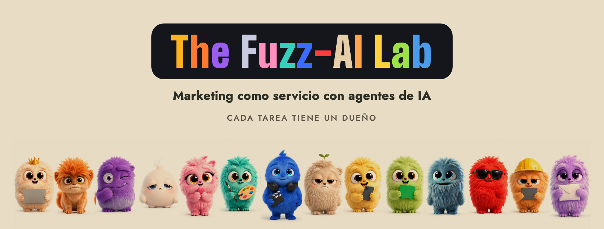

Marketing como servicio con agentes de IA
Cada tarea tiene un dueño

Detecta las noticias de tu nicho que la gente está comentando, para que siempre tengas de qué hablar.
Resultado: contenido con tema y momento.
Encuentra qué están vendiendo otros negocios de tu sector y qué le duele a tu cliente con sus palabras.
Resultado: sabes qué decir antes de publicar.
Convierte tus objetivos en un plan del mes: qué se publica, cuánto y cuándo.
Resultado: dejas de improvisar.
Ordena la producción de reels para que no se atrasen ni se pisen.
Resultado: entregas a tiempo sin correr el último día.
Escribe textos para redes, guiones y correos con el tono de tu marca.
Resultado: publicas sin quedarte en blanco.
Diseña carruseles, portadas e imágenes con tu identidad.
Resultado: tu marca se ve igual en todo.
Edita tus reels, con cortes, subtítulos y versiones cortas.
Resultado: videos listos sin pasar horas en el editor.
Arma el guion visual de cada reel con tus personajes y escenas.
Resultado: videos coherentes con tu marca, sin improvisar.
Revisa que cada pieza suene y se vea como tú.
Resultado: te llega revisado, con tu voz y tu identidad.
Mantiene tu calendario publicado y deja borradores de respuesta para tus comentarios.
Resultado: tu cuenta se mantiene activa sin estar conectado todo el día.
Revisa tus anuncios de Meta, dice qué funciona y propone cambios.
Resultado: cada peso de pauta se mueve hacia lo que mejor responde; nada se cambia sin tu aprobación.
Prepara tus correos de bienvenida, cartas y avisos.
Resultado: tu lista recibe mensajes a tiempo y con tu voz.
Lleva las decisiones importantes a tu celular.
Resultado: no te pierdes lo urgente aunque estés lejos de la pantalla.
Cada lunes te dice qué contenido y qué anuncios funcionaron, con las cifras de Meta.
Resultado: sabes qué repetir y qué dejar.
Arma las páginas y landings que recogen a tus clientes.
Resultado: una página lista para captar, sin depender de un programador.
Hacerlo por separado cuesta más de lo que parece: reuniones con cada proveedor, preguntas de "¿ya salió?", correcciones y cifras que nadie junta. Si decides trabajar con un solo equipo, te quedas con:
Gana quien decide con un solo equipo.
¿Quieres que tu negocio tenga su propio equipo?